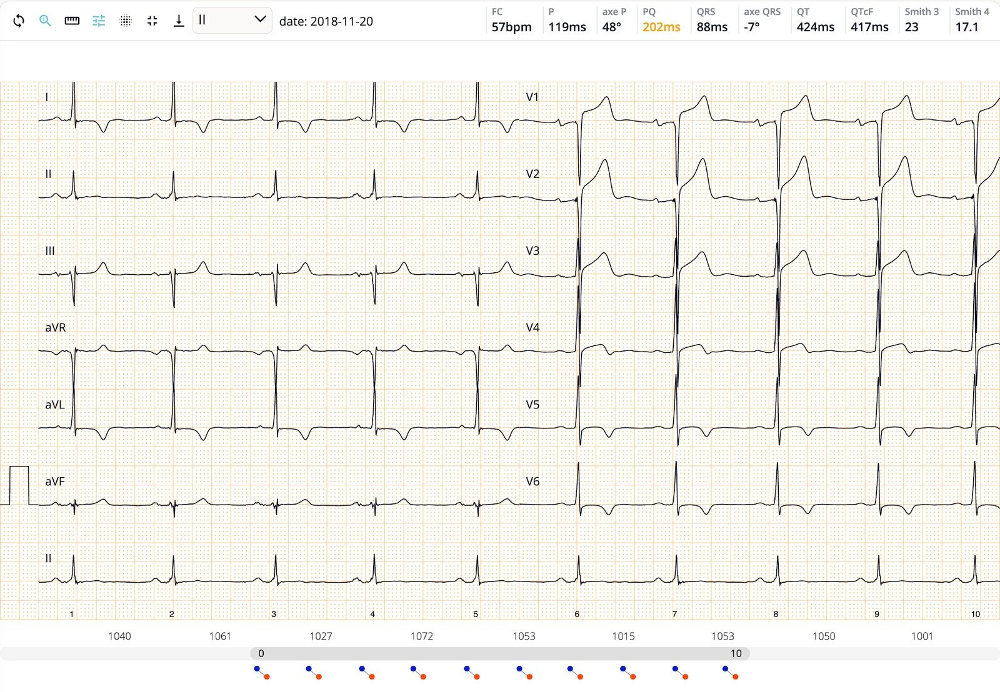
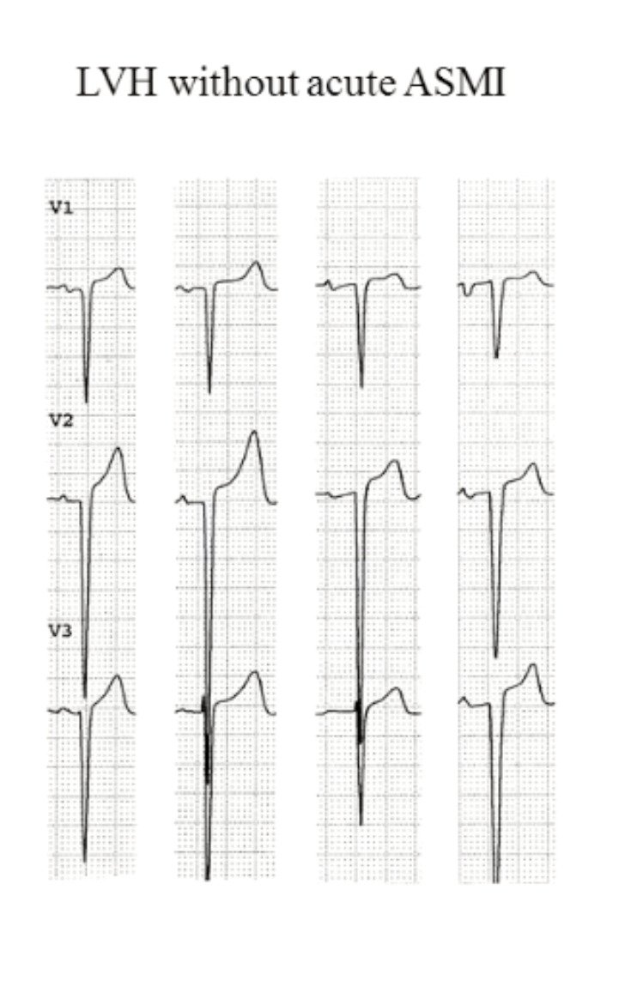
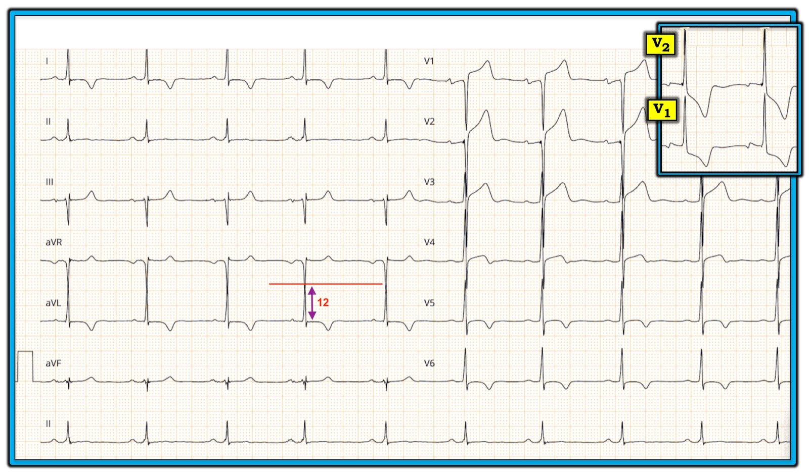

27/12/2018 — ST chênh lên rất nhiều ở V1-V3. Bạn nghĩ gì?
Bản dịch tiếng Việt của bài "Profound ST Elevation in V1-V3. What do you think?" – Dr. Smith’s ECG Blog. Giữ nguyên toàn bộ 5 hình ảnh và 2 video của bản gốc.
Điện tâm đồ này do Pierre Taboulet (http://www.e-cardiogram.com/)(https://www.facebook.com/ECG.taboulet) gửi đến — một bậc thầy điện tâm đồ, người mã hóa rất nhiều điện tâm đồ cho thuật toán mạng nơ-ron sâu trí tuệ nhân tạo (Artificial Intelligence Deep Neural Network) của Cardiologs (https://twitter.com/CardioLogs).
Tôi có thực hiện nghiên cứu về thuật toán của Cardiologs:
Smith SW và cs. A Deep Neural Network learning algorithm outperforms a conventional algorithm for emergency department electrocardiogram interpretation. (Một thuật toán học bằng mạng nơ-ron sâu vượt trội hơn thuật toán thông thường trong đọc điện tâm đồ tại khoa cấp cứu.)
Người sáng lập Cardiologs, Yann Flereau, đã được MIT vinh danh là Nhà đổi mới châu Âu của năm. Thật tuyệt. Quả là một vinh dự.
Điện tâm đồ này được hiển thị trên nền tảng Cardiologs.


Bệnh sử lâm sàng: Bệnh nhân này không có triệu chứng thiếu máu cục bộ, nhưng có huyết áp tâm thu 220 mmHg.
Bạn có thể thấy nền tảng này cung cấp một số chỉ số quan trọng, nhưng khác với mọi nền tảng khác mà tôi biết, nó còn hiển thị kết quả của công thức 3 biến và 4 biến để phân biệt tái cực sớm với tắc LAD (góc trên bên phải).
Công thức 3 biến = 23 (thấp hơn điểm cắt 23,4 đối với tắc LAD)
Công thức 4 biến = 17,1 (cũng dưới điểm cắt, lần này thấp hơn 18,2 là điểm cắt của công thức 4 biến)
Sử dụng các số đo sau:
STE60V3 = 3,0
QTc = 417
RAV4 = 16,5
QRSV2 = 18
Tôi tính được:
Công thức 3 biến = 22,8 (nhưng nếu tôi đo STE60V3 = 3,5 thì được 23,41)
Công thức 4 biến = 17,7 (nhưng nếu tôi đo STE60V3 là 3,5 thì được 18,26)
Thuật toán không chẩn đoán LVH. Ấn tượng tức thì của tôi về điện tâm đồ này là LVH. Nhưng nó không đáp ứng bất kỳ tiêu chuẩn chuẩn mực nào.
Tuy nhiên, nó đáp ứng tiêu chuẩn LVH mới, vốn mới được xây dựng và thẩm định gần đây: tổng biên độ của sóng S sâu nhất ở bất kỳ chuyển đạo nào cộng với sóng S ở chuyển đạo V4. Nếu sóng S sâu nhất nằm ở V4 thì nhân đôi giá trị đó. Nếu tổng lớn hơn 2,3 mV (23 mm) ở nữ và lớn hơn 2,8 mV (28 mm) ở nam thì chẩn đoán phì đại thất trái.
Sóng S ở V2 = 17 mm
Sóng S ở V4 = 9 mm
Tổng = 26 (không lớn hơn 28), vậy là không phải LVH theo quy tắc mới!
Dù vậy, nó vẫn có dáng dấp của LVH.
Peguero JG và cs. Electrocardiographic criteria for the diagnosis of left ventricular Hypertrophy (Tiêu chuẩn điện tâm đồ chẩn đoán phì đại thất trái). JACC 69(23):1694-1703; ngày 4 tháng Tư năm 2017. Tuy vậy, độ nhạy chỉ là 62%, với độ đặc hiệu trên 90%.
Các công thức này không được xây dựng hay thẩm định trên những điện tâm đồ có LVH, và độ chính xác của chúng trong hoàn cảnh này là không chắc chắn.
Tôi tin rằng công thức 4 biến sẽ hoạt động rất tốt khi có LVH. Nhưng chúng ta cần kiểm chứng điều đó.
Diễn giải chủ quan của tôi, và của Pierre, là LVH kèm bất thường tái cực thứ phát, bao gồm ST chênh lên kiểu giả STEMI (pseudoSTEMI) ở V1-V3. Nhưng chuyển đạo V2 có mức ST chênh lên đáng lo ngại, và ở một bệnh nhân đau ngực, tôi sẽ lo ngại về STEMI.
Tỷ số giữa ST chênh lên (STE) và sóng S:
V1: 2,5/16 = 16%
V2: 3/17 = 18% (đây là tỷ số cao ngay cả khi có LVH)
V3: 2/15 = 13%
Dưới đây là một hình của K. Wang cho thấy tỷ số ST/S bình thường trong LVH:


Siêu âm tim tại giường xác nhận LVH rõ rệt mà không có rối loạn vận động thành trước:
Đây là điện tâm đồ LVH nền của bệnh nhân.

======================================
BÌNH LUẬN CỦA TÔI, bởi KEN GRAUER, MD (27/12/2018):
======================================
Xin nồng nhiệt chào đón người bạn và đồng nghiệp đến từ Pháp = Dr. Pierre Taboulet, người luôn mang đến những bản ghi đầy thử thách nhất. Cũng như Dr. Smith — tôi rất thích làm việc với nền tảng điện tâm đồ của Cardiologs, và thấy thật nhanh chóng và hữu ích khi các giá trị công thức của Dr. Smith đã được tính sẵn và hiển thị ngay cho tôi vào lúc tôi xem các điện tâm đồ mình đang diễn giải.
- Tôi xin bổ sung các nhận xét sau về điện tâm đồ được bàn luận trong ca này. Để rõ ràng — tôi đã tái hiện lại điện tâm đồ này, có thêm vào một vài chú thích (Hình 1).


==========================
Qua nhiều năm, y văn đã đề xuất hơn 50 tiêu chuẩn để chẩn đoán LVH trên điện tâm đồ. Nhìn chung, độ nhạy của các tiêu chuẩn này còn kém, ngay cả với những chuyên gia điện tâm đồ giỏi nhất — thường dưới 60%. “Tin tốt” là: i) Mặc dù độ nhạy kém trong chẩn đoán LVH bằng điện tâm đồ — khi một số tiêu chuẩn nhất định được thỏa mãn, độ đặc hiệu đối với LVH có thể rất cao (tức là >90-95%); và, ii) Siêu âm tim thường sẵn có, và là một phương pháp chính xác, tuyệt vời để đánh giá lớn các buồng tim. Một số điểm bổ sung liên quan đến chẩn đoán LVH trên điện tâm đồ gồm:
- Bệnh sử Lâm sàng giúp ích cho việc đánh giá LVH trên điện tâm đồ. Điều quan trọng cần nhận thức là ngay cả trước khi nhìn vào chính điện tâm đồ — khả năng thực sự có lớn buồng tim tăng lên rất nhiều NẾU bệnh nhân lớn tuổi, có tăng huyết áp lâu năm và/hoặc có bệnh tim nền dễ dẫn đến lớn buồng tim (tức là suy tim, bệnh cơ tim, bệnh van tim, v.v.).
- Độ đặc hiệu của điện tâm đồ đối với LVH được nâng lên rất nhiều nếu, ngoài tiêu chuẩn điện thế — bệnh nhân còn biểu hiện các bất thường tái cực sóng ST-T phù hợp với “tăng gánh” thất trái (LV strain).
- Cơ sở sinh lý của dấu hiệu LVH trên điện tâm đồ là khi khối cơ thất trái tăng lên — các lực điện hướng về phía thất trái (LV) tăng lên, và điều này tạo ra biên độ sóng R lớn hơn ở một hoặc nhiều chuyển đạo bên trái (tức là các chuyển đạo I, aVL, V4,5,6). Hệ quả là — các chuyển đạo bên phải (tức là các chuyển đạo V1,V2) thường xuất hiện sóng S sâu hơn, phản ánh các lực tăng lên di chuyển ra xa thất phải, hướng về phía thất trái bị phì đại. Hầu hết các tiêu chuẩn điện tâm đồ cho LVH phản ánh sự tương tác giữa biên độ tương đối của sóng R và sóng S ở các chuyển đạo khác nhau.
- Do độ nhạy nói chung kém của điện tâm đồ trong đánh giá LVH — tiêu chuẩn điện thế của LVH không phải lúc nào cũng được thỏa mãn ở những bệnh nhân có bằng chứng rõ ràng về lớn buồng tim trên siêu âm tim. Dù vậy, người đọc vẫn có thể nghi ngờ mạnh LVH khi đánh giá một điện tâm đồ nếu: i) bệnh nhân ở một độ tuổi nhất định (tức là bệnh nhân dưới ~35 tuổi thường biểu hiện biên độ QRS lớn hơn mà không phản ánh lớn buồng tim thực sự); ii) bệnh nhân có tăng huyết áp lâu năm và/hoặc bệnh tim nền khác dễ dẫn đến LVH; và, iii) thấy “tăng gánh” thất trái mặc dù không đủ tiêu chuẩn điện thế. Trong những trường hợp như vậy — khi đọc điện tâm đồ cho người khác, tôi thường ghi “Có thể LVH” làm nhận định của mình.
- BẤM VÀO ĐÂY — để xem thêm về Cách tiếp cận của tôi đối với việc đánh giá trên điện tâm đồ về LVH.
==========================
Về điện tâm đồ trong ca này:
- Các tiêu chuẩn chuẩn mực để chẩn đoán LVH trên điện tâm đồ có được thỏa mãn trên bản ghi này. Tiêu chuẩn điện thế được chấp nhận cho LVH bao gồm biên độ sóng R ≥12 mm ở chuyển đạo aVL bên cao — điều này có hiện diện trong ca này. LƯU Ý: Mặc dù khó đánh giá do các chuyển đạo chồng lên nhau — mật độ đậm hơn rõ rệt của vùng chồng lấn ở chuyển đạo aVL gợi ý với tôi rằng đỉnh sóng R ở chuyển đạo aVL nằm tại điểm mà tôi đánh dấu bằng đường ngang màu ĐỎ trong Hình 1.
- ĐIỂM THEN CHỐT (PEARL): Tôi thấy tiêu chuẩn điện thế ≥12mm ở chuyển đạo aVL này đặc biệt hữu ích khi trục lệch về bên trái (tôi đo được trục mặt phẳng trán là -10 độ cho điện tâm đồ này). Là chuyển đạo “bên” cao nhất — aVL nhìn thấy vectơ khử cực thất trái hướng gần như thẳng về phía nó khi trục lệch trái. Các chuyển đạo ngực nằm thấp hơn có thể không cho thấy biên độ QRS tăng trong những trường hợp như vậy.
- Một tiêu chuẩn LVH chuẩn mực khác (dù ít được dùng hơn) có thể được thỏa mãn trong ca này — là tiêu chuẩn Cornell. Tiêu chuẩn này cho rằng có LVH NẾU tổng của R ở aVL + S ở V3 ≥20 mm (đối với bệnh nhân nữ) hoặc ≥28 mm (đối với nam). Chúng ta không được cho biết điện tâm đồ này của nam hay nữ — nhưng nếu là nữ, tôi đếm được 12 (R ở aVL) + 15 (S ở V3) = 27 mm.
- Cuối cùng, chúng ta không thể biết tiêu chuẩn điện thế LVH dùng biên độ sóng R ở chuyển đạo I + độ sâu sóng S ở chuyển đạo III (nếu tổng này ≥25 mm) có được thỏa mãn hay không — vì sóng R ở chuyển đạo I bị cắt mất …
- Dù đã nói như trên, ngay cả khi tiêu chuẩn điện thế không được thỏa mãn trong ca này — tôi vẫn nghi ngờ mạnh LVH là nguyên nhân gây ST chênh lên rất nhiều ở các chuyển đạo trước vì: i) Bệnh sử ủng hộ mạnh cho LVH (Không đau ngực; tăng huyết áp rất nặng); ii) Thấy thay đổi sóng ST-T phù hợp với “tăng gánh” thất trái và/hoặc thiếu máu cục bộ ở nhiều chuyển đạo; và, iii) HÌNH DẠNG của sóng ST-T ở chuyển đạo V1,V2 gợi ý LVH nhiều hơn hẳn so với STEMI cấp. Giải thích: Cũng như một số bệnh nhân LVH biểu hiện ưu thế sóng S sâu ở các chuyển đạo bên phải thay vì sóng R cao ở các chuyển đạo bên trái — thay đổi sóng ST-T của “tăng gánh” thất trái có thể biểu hiện dưới dạng “hình soi gương” (= reciprocal) của “tăng gánh” thất trái ở các chuyển đạo bên phải. Chẳng phải hình đảo ngược của chuyển đạo V1 và V2 được trình bày trong ẢNH CHÈN của Hình 1 biểu hiện một hình dạng sóng ST-T mà nếu xuất hiện ở V5, V6 thì sẽ gợi ý mạnh đến LVH hay sao?
- ĐIỂM THEN CHỐT (PEARL): Đối chiếu lâm sàng là MẤU CHỐT trong ca này. Mọi nhận định sẽ không còn đúng nữa nếu thay vì không đau ngực, bệnh nhân này có các triệu chứng mới khởi phát đáng lo ngại. Nếu đó là bối cảnh lâm sàng, thì ST dạng vòm (coving) ở nhiều chuyển đạo, kèm sóng T đảo ngược đối xứng + điểm J ST chênh lên 2-4 mm ở các chuyển đạo V1 đến V3 rất có thể là biểu hiện của một biến cố tim cấp. Nhưng ở một bệnh nhân không có bất kỳ triệu chứng nào như vậy — LVH rõ rệt ở bệnh nhân tăng huyết áp nặng lâu năm đôi khi có thể tạo ra những thay đổi sóng ST-T rất giống với những gì thấy trong Hình 1.